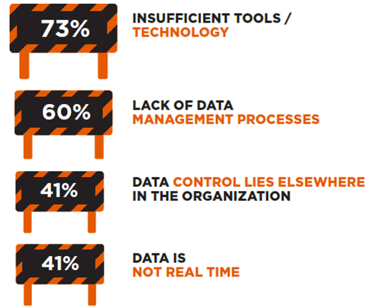
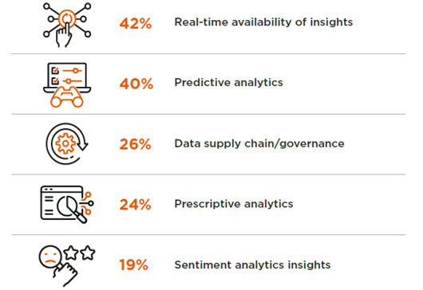

The struggles of a data marketer
Marketing is traditionally associated with advertising but is so much more than deciding on which ads to present to your customers. As a marketer, you’re expected to help shape your company’s value proposition, communicate it to your customers and manage their acquisition, development, and churn. Yet this process is not without its problems: Your customers might leave your company; you might face high shopping cart abandonment or have to deal with low conversion rates. As a marketer you will most likely turn to your data to see what is going on. And evidence suggests you should: Reports from McKinsey show that data-driven sales can increase EBITDA by 15 to 25 percent (Böringer et al. 2022).
Yet your data analysis process can take too long. You have to start from scratch collecting data each time or your analysis methods cannot seem to uncover what is truly happening among your customers. A recent study by the Chief Marketing Officer Council (2022) in partnership with GfK, one of the world’s largest marketing research organisations, shows you are not alone:
“80% Of marketers say data, analytics and insights are very important to winning and retaining customers. Yet nearly two-thirds of those marketers are only moderately confident (or worse) in their data, analytics, and insights systems.” (‘The High-Velocity Data Marketer’ 2022)
Data marketing relies on access to all relevant data in order to find answers to business questions. Data access comes with its own barriers however (Figure 1). Often marketeers find themselves unable to integrate all data due to insufficient tools or technology. The files coming from your company database might not be compatible with your preferred analytics software or they might be too large to handle on your personal computer. Moving all your data to a cloud provider, such as Microsoft, Google or Amazon can be a great help in such cases. In choosing such a provider, it is important to consider what needs you need fulfilled. Want to make nice looking dashboards in PowerBI? Microsoft Azure might be the way to go. Want to easily access your data from Google Analytics? Think about Google Cloud Platform as your provider.

Making such a decision is however not easy, and your company’s situation might have other requirements. In addition, lack of proper data management processes and scattered data control make it even harder for marketers to gather all their data in one place. Before you make cloud decisions, it is therefore always a good idea to conduct an analytical maturity assessment. What data does your company have? Where is it situated? How do you plan on using it? And what should the results look like?
“81% Of marketers say hiring more talent with AI skills is the most critical need to developing their AI capabilities. Yet hiring more talent is also their biggest AI-related challenge.” (‘The High-Velocity Data Marketer’ 2022)
The customer journey has become more digitalised throughout the years: Customers do their research online before even meeting a salesperson. These buyer intent signals are critical in understanding the customer’s decision process and its critical moments.
Buyer intent signals can come from multiple sources, including your website, social media, or internal CRM systems. True competitive advantage comes from generating real-time insights, identifying sudden shifts in these signals, and swiftly adapting and acting on them. This can mean searching for and addressing bottle necks in your customer’s journey or adapting your messages to your customers. At Algorhythm we addressed low engagement among customers of a large pharmaceutical player by building models that provide customer level recommendations on which channels to use, frequency to interact, and content to communicate, for example.
As the noise across all of these channels grows louder, data marketers have to work even harder to find, extract and analyse relevant signals and produce actionable insights all while keeping the limited time span of the customer’s interactions with the company in mind. Data marketers therefore need the capabilities to detect opportunities and decide on the next best action while the customer is still engaged with the organisation. The banking sector, for example, often struggles with preventing customer churn. For our client, a large Belgian bank, we built a model to predict not only the propensity of churn but also the best possible offer to address each client with.
AI has disrupted the standard toolkit of the data marketeer but also given us new tools to uncover even the most well-hidden patterns. The same study by GfK (Figure 2) shows that capabilities like predictive and prescriptive analytics or sentiment analysis are however still out of most marketers’ reach. The abundance of technologies and methods might be overwhelming, but all serve their individual purposes. It is therefore important to ask yourself the right questions before getting started with any of them. Do you want to know which customers will churn within a given time frame? Then you might want to focus on predictive analytics. But do you want to know what type of campaigns you should run in order to attract new customers? Then prescriptive analytics is probably more suited for your purposes. Even scraping online sources to reveal customer sentiment about your newly launched products or ad campaigns before they are reflected in the company’s financials is no longer out of reach with AI.
“The challenge is choosing the right solution from a sea of options.” (‘The High-Velocity Data Marketer’ 2022)
The struggles of a data marketer are real. And as data becomes more ubiquitous and AI more pervasive, they are not likely to become any less prevalent.
